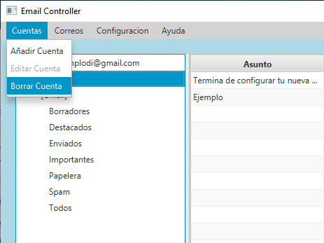
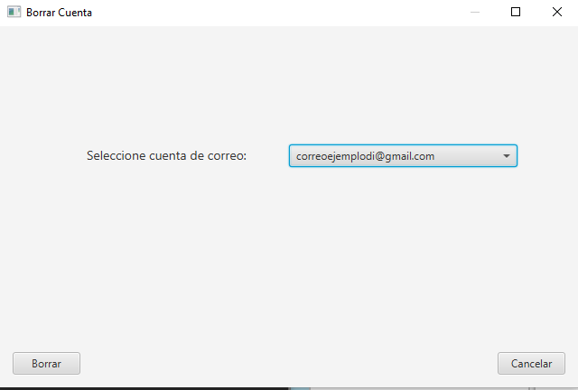

You can see how to add a new account in this article
Get started
For remove an account from the application, you need to go to the menu "Cuentas" and click
on the submenu "Borrar Cuenta".

This will open a new window. In this window you can select the account
you want to delete and remove it with the proper button.

The editing account window is currently on work.